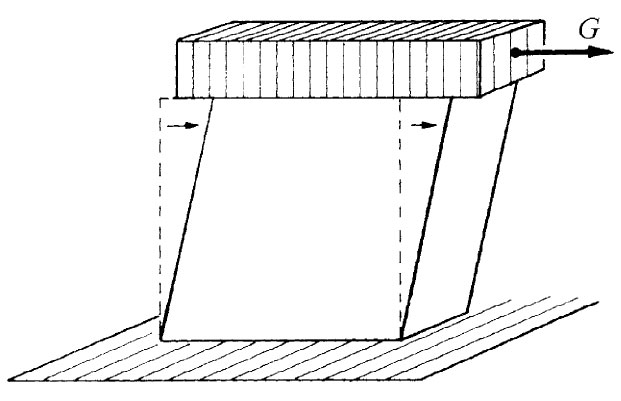
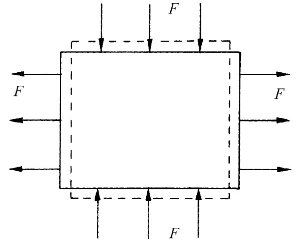
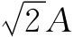

作为第一个例子，让我们来找出在均匀的流体静压强的作用下，一个矩形块发生的情况。现在把一块东西放进压力箱的水里，那么，这一块东西的每一个面就都会受到一个正比于该面积向内的作用力（见图38-2）。由于流体静压强是均匀的，所以作用于该块东西每一面上的应力 （单位面积之力）就都相同。我们将首先算出在长度上的变化。该块东西的长度变化可以想象成如图38-3中所简示出来的那三个独立问题中可能发生的长度变化之和。
图38-2 受到均匀的流体静压强作用的一根杆
图38-3 流体静压强是三个纵向压缩力的叠加
问题1 若在该块材料两端我们用压强p将其推压，则压缩应变为p/Y，而且符号是负的，
问题2 若加压强p于该块材料的两个侧面，则压缩应变又是p/Y，但此刻我们所要的是纵向应变，它可以由侧向应变乘以-σ而得到。侧向应变为
因而
问题3 若在该块材料的顶上加以推压，则压缩应变又是p/Y，而其相应的侧向应变再次为-p/Y。因而得到
把这三个问题的结果合起来——也就是说，取Δl=Δl1 +Δl2 +Δl3 ——我们便得
当然，这一问题在所有三个方向上都对称，因此，
在流体静压强作用下的体积 变化也是有些令人感兴趣的。由于V=lwh，所以对于小位移可写出
该体应力 p与体应变成正比——再次得到胡克定律。系数K称为体积弹性模量 ，它与其他常数间的关系为
（38.9）
由于K具有某种实用价值，许多手册常给出Y和K而不是给出Y和σ。如果你想要得到σ，就总可以由式（38.9）获得它。我们也可从式（38.9）看出，泊松比σ必然小于1/2。假如不是这样的话，则体积弹性模量会是负值，因而材料便会在增大压强时膨胀。这使得我们能够从 任一块旧材料中获取机械能量——这意味着该块材料处于不稳定平衡中。如果我们开始让它膨胀，则它就会自己继续膨胀同时释放出能量来。
现在我们要来讨论，当把“切”应变加于某个东西上时发生的情况。所谓切应变，我们指图38-4所示的那种畸变。作为对这一问题的准备，让我们考察受到如图38-5所示的力作用的一块立方形 材料内的应变。可以再度把它分解成两个问题：垂直方向的推力和水平方向的拉力。设这立方体每一面的面积为A，则对于水平长度的变化得
垂直方向高度的变化恰好就是此式的负值。
|  |  |
| 图38-4 在均匀剪切作用下的立方体 | 图38-5 在顶部和底部都受到压缩力作用而在两侧受到相等的拉伸力作用的一个立方体 |
现在假设同样的立方体受到如图38-6（a）所示的那些剪切力作用。注意！如果要不产生净转矩并要立方体处于平衡态中的话，则所有力必须相等（相似的力也必须在图38-4中出现，因为这块东西是处于平衡态。这种力是由使这块东西固定在台面上的“黏胶”提供的）。这时，该立方体被认为是处于纯剪切的状态。但必须注意，若用一个45°角的面——比如说沿图中的对角线A——来切割该立方体，则作用于这一截面上的总力垂直 于这个平面并等于 。受这个力所作用的面积为 ，因此，垂直于这个面上的张应力仅为G/A。同理，如果我们检查一下与另一方向作成45°角的平面——图中的对角线B——便会看到有一个垂直于这个面的压缩应力-G/A。由此可见，在一“纯剪切”中的应力 相当于彼此大小相等、互相正交，并与原立方体的面成45°角的那个张应力和压应力的组合。内应力和内应变与我们在图38-6（b）所示的那种力作用下的较大块材料中将要求得的相同，但这就是我们已经解答的问题。对角线长度的改变由式（38.10）给出：
（38.11）
（其中一条对角线缩短，另一条则伸长）。
图38-6 （a）中的两对剪切力产生了与在（b）中的压缩和拉伸力相同的应力
把剪切应变用立方体受扭转的角度——图38-7中的θ角——来表示往往很方便。从这个图的几何形状你便可以看出，顶边的水平位移δ等于 ，因此
剪切应力g被定义为作用于一个面上的切向力除以该面面积，即g=G/A。应用式（38.11）于（38.12）中，得
或者，把这个式子写成“应力=常数乘应变”的形式，即
g=μθ. （38.13）
比例系数μ称为剪切模量 （或者有时称为刚度系数）。如果用Y和σ来表达，则为
（38.14）
顺便提一下，这剪切模量必须是个正值——要不然你就可以从正在受到剪切作用的一块材料中获得功。根据式（38.14），σ必须大于-1。这样，我们便知道σ一定要在-1与 之间。然而，实际上，它却总是大于零的。
图38-7 切应变θ为2ΔD/D
作为整个材料中应力均匀的那种典型情况的最后一个例子，让我们考虑这样的问题，一块材料被拉伸而同时又受到约束 以致没有什么横向收缩能够发生（在技术上，对它进行压缩而同时不避免侧向凸起来稍微容易些——但这是同样的问题）。会发生什么情况呢？噢，必然存在使它的厚度不变的那种侧向力——一些我们此时不知道但必须计算出来的力。这与上面已经做过的问题类型相同，只是要用一点不同的代数。我们设想作用于所有三个侧向面上的力如图38-8所示，计算各种线度的改变，而选择一些横向力使得宽度和高度都保持不变。按照通常的论证，对于那三个应变得：
图38-8 没有侧向收缩的伸长
现在，由于Δly 和Δlz 都假定为零，所以式（38.16）和（38.17）给出了把Fy 和Fz 与Fx 相联系的两个方程式。对它们一起求解，得到
你以后会经常看到把这个式倒转，并将σ的二项式分解成因式，于是它被写成
当我们把各侧都约束住时，杨氏模量得用一个复杂的σ函数相乘。正如你可以由式（38.19）最容易见到的，在Y前面的那个因子总大于1。当各侧都固定时，拉伸一块东西是较难的——这也就意味着，一块东西的强度当其各侧都被固定时会比不固定时强 。